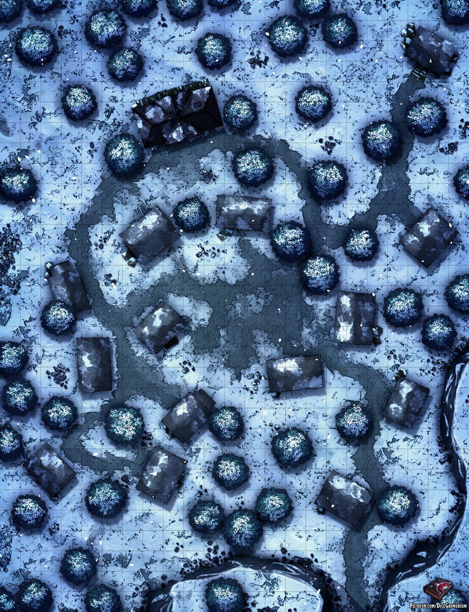
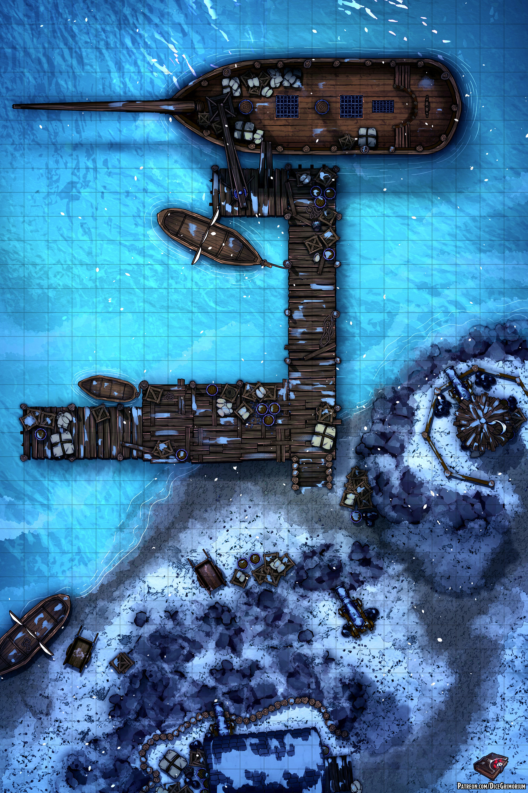
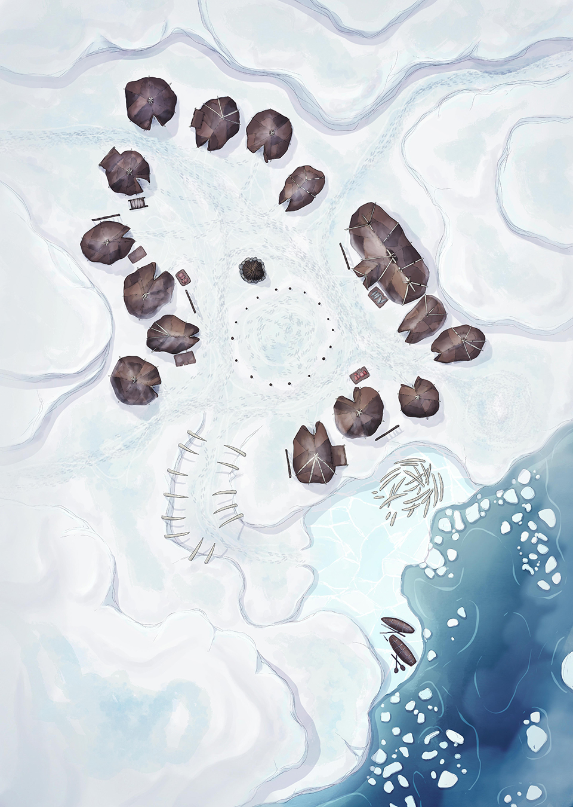

155 · 雪村街道
積雪房屋、環形道路、樹木與出入口；俯視方格跑團圖
作者：Dice Grimorium（George）；作者發布頁。
作者免費跑團版；未標示開放再散布授權。本機私人跑團；不是商用或公開再散布許可
免費下載不等於開放授權；未確認商用及對外再散布權利。此圖用於這個本機私人跑團。


以下都是俯視跑團圖。背景檔旋轉90度、縮小並留邊，保留整張地圖及署名。舞台依視窗滿版取景；下方可查看未裁切、未修改原圖。不是官方模組專圖。3D雪村已撤下。
積雪房屋、環形道路、樹木與出入口；俯視方格跑團圖
作者：Dice Grimorium（George）；作者發布頁。
作者免費跑團版；未標示開放再散布授權。本機私人跑團；不是商用或公開再散布許可
免費下載不等於開放授權；未確認商用及對外再散布權利。此圖用於這個本機私人跑團。

冰水、木棧橋、船隻、岸上補給與守衛據點；俯視方格跑團圖
作者：Dice Grimorium（George）；作者發布頁。
作者免費跑團版；未標示開放再散布授權。本機私人跑團；不是商用或公開再散布許可
免費下載不等於開放授權；未確認商用及對外再散布權利。此圖用於這個本機私人跑團。

冰岸帳篷、中央火堆、足跡、骨架與小船；俯視跑團圖
作者：George Mason／The Reclusive Cartographer；作者發布頁。
CC BY-NC 4.0。署名、非商業；保留授權連結與修改說明

本頁標註不涵蓋其他既有素材的授權。